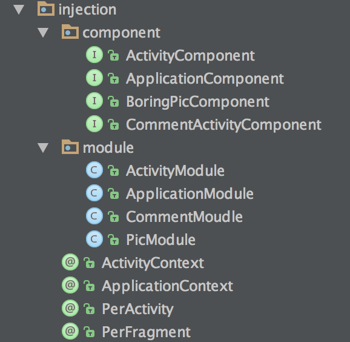

看懂这篇文章你需要有 依赖注入 以及 dagger 相关的知识点
为了方便管理，将所有的依赖注入的代码放在一个包，包括Module ，component，注解

ApplicationMoudle
提供全局的注入 ，如 Retrofit 的 service ，DataRepository 等， 其中的@provides 均标记为 @Singleton
@Module
public class ApplicationModule {
protected final Application mApplication;
public ApplicationModule(Application application) {
mApplication = application;
}
@Provides
@Singleton
Application provideApplication() {
return mApplication;
}
@Provides
@Singleton
Context provideContext() {
return mApplication;
}
@Provides
@Singleton
ThreadExecutor provideThreadExecutor(JobExecutor jobExecutor) {
return jobExecutor;
}
@Provides
@Singleton
PostExecutionThread providePostExecutionThread(UIThread uiThread) {
return uiThread;
}
@Provides
@Singleton
JiandanService provideRibotsService() {
return JiandanService.Creator.newJiandanService();
}
@Provides
@Singleton
DataRepository provideDataRepository(DataManager dataManager) {
return dataManager;
}
}
注： 可以看到 PostExecutionThread 和 UIThread、DataRepository 和DataManager。
并不是同一个对象，其实前者是接口，后者是前者的实现，接口都定义在 domain 层，实现定义在别的层，所以 domain 层可以是纯 java 的实现，通过 dagger 的注入实现了三层的完全解耦
ApplicationComponent
将 ApplicationMoudle提供的构造对象暴露出来
@Singleton
@Component(modules = ApplicationModule.class)
public interface ApplicationComponent {
//Exposed to sub-graphs.
Activity activity();
JiandanService jiandanService();
ThreadExecutor threadExecutor();
PostExecutionThread postExecutionThread();
DataRepository userRepository();
VODataMapper provideVODataMapper();
}
ActivityModule
提供 activity 的依赖注入，这个维度是 @PerActivity的
@Module
public class ActivityModule {
private Activity mActivity;
public ActivityModule(Activity activity) {
mActivity = activity;
}
@Provides
@PerActivity
Activity provideActivity() {
return mActivity;
}
}
ActivityComponent
@PerActivity
@Component(dependencies = ApplicationComponent.class, modules = ActivityModule.class)
public interface ActivityComponent {
//Exposed to sub-graphs.
Activity activity();
JiandanService jiandanService();
ThreadExecutor threadExecutor();
PostExecutionThread postExecutionThread();
DataRepository userRepository();
VODataMapper provideVODataMapper();
}
这里并没有 inject方法，以后的Activity维度的Component 需要继承这个Component。在@PerFragment维度 要依赖ActivityComponent
举个栗子
@PerActivity
@Component(dependencies = ApplicationComponent.class, modules = CommentMoudle.class)
public interface CommentActivityComponent {
void inject(CommentActivity commentActivity);
}
BoringPicMoudle
具体的 usecae 的构造方法的提供
@Module
public class PicModule {
@Provides
@PerFragment
GetPicsCase provideMorePicsUseCase(
DataRepository userRepository, ThreadExecutor threadExecutor,
PostExecutionThread postExecutionThread) {
return new GetPicsCase(threadExecutor, postExecutionThread, userRepository);
}
}
DataRepository 、ThreadExecutor、PostExecutionThread ，在ApplicationComponent.class中都暴露出了，dagger 会自己在 applicationMoudle 中找到对应的构造方法
BoringPicComponent
@PerFragment，依赖ActivityComponent.class，在ActivityComponent.class中已经将ApplicationComponent中的构造方法给暴露出来了，除此之外，还依赖PicModule.class，其中暴露了需要用的 usecae
@PerFragment
@Component(dependencies = ActivityComponent.class, modules = PicModule.class)
public interface BoringPicComponent extends ActivityComponent {
void inject(PicNewFragment PicNewFragment);
}```
在 fragment 中注入
```java
BoringPicComponent picComponent = DaggerBoringPicComponent.builder()
.activityComponent(getActivitynComponent())
.picModule(new PicModule())
.build();
picComponent.inject(this);
// baseFragment --------------
protected ActivityComponent getActivitynComponent() {
return DaggerActivityComponent.builder()
.activityModule(new ActivityModule(getActivity()))
.applicationComponent(getApplicationComponent())
.build();
}
protected ApplicationComponent getApplicationComponent() {
return ((JiandanApplication)getActivity().getApplication()).getComponent();
}
presenter
虽然没有在module的 provide方法中暴提供 presenter 的方法，其实是在presenter类的构造方法
@Inject
public BoringPicPresenter(GetPicsCase getPicsCase) {
this.getMorePics = getPicsCase;
}